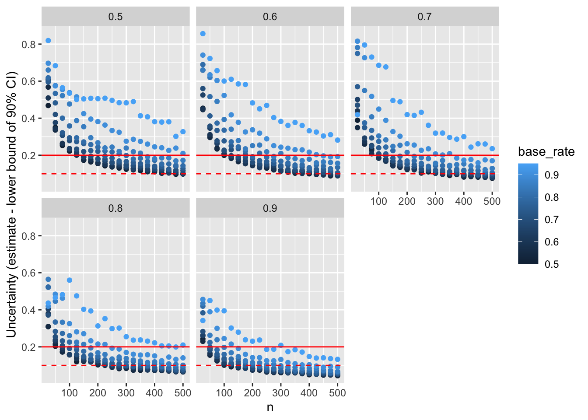

Work in Progress: This post is a draft and currently under review.
Feedback is highly welcome. Please double-check the details before relying on them for decision-making.
Researchers conducting meta-analyses and systematic reviews need to decide whether to use one or multiple researchers at both the screening and coding stages. While double-coding leads to the identification of more relevant articles (Waffenschmidt et al. 2019), and (almost necessarily) to greater accuracy in coding, it is also much more resource-intensive. Therefore, many protocols specify that they will double-screen or double-code a share of articles and then either simply use that to report on interrater reliability or to decide on the approach for the remaining sources.
Frequently, that share is specified as a percentage - e.g., 20%. However, that appears odd if the point is to estimate a statistic based on a sample. Typically, the sample size for such an estimate should be based on the desired level of precision. Here, I aim to identify such sample sizes, going beyond a literature that often relies on rules of thumb that are frequently not very specific. For instance, McHugh (2012) proposes that: “As a general heuristic, sample sizes should not consist of less than 30 comparisons. Sample sizes of 1,000 or more are mathematically most likely to produce very small CIs, which means the estimate of agreement is likely to be very precise.” Here, I will try to add some precision - initially for very simple cases with two raters making a binary decision (e.g., inclusion vs exclusion).
Intuitively, interrater agreement is often understood as the percentage overlap. However, with few and unbalanced categories, that can be highly misleading. For instance, during the title and abstract screening for a systematic review, 90% of articles may be excluded. In that case, purely random decisions by two raters who use that base rate can be expected to result in 82% agreement 1. Cohen’s kappa is an alternative statistic that corrects for the expected random agreement, and is thus preferable (though not without its own limitations that go beyond the present scope).
For instance, a kappa of 0.8 means that 80% of the possible agreement beyond chance has been achieved. In the example where 90% of articles are excluded, this would correspond to an observed agreement of approximately 96.4% (with 82% expected by chance and the remaining agreement due to actual consistency between raters).”
Typically, the point of calculating interrater agreement on a subset of the data is to estimate whether agreement on the full dataset would exceed an established minimum value. For instance, Cohen defined .8 as the threshold for strong agreement, so that this is often taken to be the target value.
However, such targets should generally not just be exceeded by an observed estimate. Usually, we would want to be confident that the true underlying value exceeds the threshold. For instance, if we want to pre-register that we rely on a single coder if interrater reliability is sufficient, we would want to aim for a result that tells us that our observed reliability is significantly above the treshold. Specifically, we might want to ensure:
Note that these two ambitions are closely related - a confidence interval is defined as the range in which we can expect a specific proportion of observed estimates to fall. If this is symmetric (usually assumed), the same proportion will be below and above - thus, if we want to have a 95% chance to estimate kappa above a threshold, this means that the 90% confidence interval will have to exclude that threshold. Also note that they are entirely dependent on the expected real value of kappa. In the extreme, if we expect it to be right on the threshold (or below), no sample size will suffice to give us meaningful odds to conclude that it exceeds the threshold.
If we simply want to report kappa, the question becomes more about what precision is required to make the reporting meaningful. At the very least, we might want to ensure that we do not span more than one “level of agreement” based on Cohen’s heuristics, i.e. that we have a lower limit to the confidence interval that is less than .2 away from the point estimate. This will allow us to exclude that we actually have a weak level of agreement when we report a strong level of agreement - which is not a lot to ask. Note that the width of the confidence interval here depends on both the observed agreement (with high and low levels of agreement resulting in narrower confidence intervals than medium ones) and the chance overlap (with higher degrees of chance overlap resulting in wider confidence intervals.)
In the following, I will (a) simulate the confidence intervals for various parameter combinations and (b) calculate the required sample size to achieve the desired confidence interval width. The formula to calculate confidence intervals for Cohen’s kappa comes with some issues 2, so that a comparison of both approaches seems warranted.
Note that kappa is not defined if only one rating is used (e.g., if all articles are deemed irrelevant by both raters). Such cases can occur when fairly small samples come together with fairly high base rates for one category (e.g., exclusion), yet they are ignored here.
Based on a simulation varying the sample size, the base rate of the category of interest, and the desired kappa, we can estimate the average uncertainty around the kappa estimate. Given that we generally only care whether kappa is good enough, i.e. whether it exceeds a threshold, we can focus on the lower bound of the 90% confidence interval, which corresponds to a one-tailed significance test at the 5% level. The plot below shows the average uncertainty for each combination of sample size (from 25 to 500), base rate (from 50% to 95%), and target kappa (from .6 to .9), based on 1000 simulations. The red solid line indicates a threshold of .2, which corresponds to the ability to claim that kappa is not more than one band away from the estimate, e.g. that it is at least “moderate” if we observe a “substantial” value. The red dashed line indicates a threshold of .1, which would give us about 50% chance that the confidence interval ends in the same band as the estimate.
get_kappa <- function(r1, r2, ci_width = .95) {
stopifnot(
"r1 and r2 must have same length" = length(r1) == length(r2),
"r1 and r2 must not have any missing values" = !any(is.na(r1)) & !any(is.na(r2)),
"r1 and r2 must consist of the same 2 unique values" =
all(sort(unique(r1)) == sort(unique(r2))) & length(unique(r1)) %in% c(1, 2)
)
n <- length(r1)
values <- sort(unique(r1))
r1[r1 == values[1]] <- 0
r1[r1 == values[2]] <- 1
r2[r2 == values[1]] <- 0
r2[r2 == values[2]] <- 1
# Calculate observed agreement
observed_agreement <- sum(r1 == r2) / n
# Calculate the probability of agreement by chance for each category
p0 <- sum(r1 == 0) / n * sum(r2 == 0) / n
p1 <- sum(r1 == 1) / n * sum(r2 == 1) / n
p_random_agreement <- p0 + p1
# Calculate Cohen's kappa
kappa <- (observed_agreement - p_random_agreement) / (1 - p_random_agreement)
# SE (based on McHughes, 2012)
se_kappa <- sqrt(observed_agreement * (1 - observed_agreement) / (n * (1 - p_random_agreement)^2))
ci_low <- kappa - abs(qnorm((1 - ci_width) / 2)) * se_kappa
ci_high <- kappa + abs(qnorm((1 - ci_width) / 2)) * se_kappa
data.frame(kappa = kappa, se = se_kappa, ci_low = ci_low, ci_high = ci_high, observed_agreement = observed_agreement, p_random_agreement = p_random_agreement)
}#Code to simulate one run
simulate <- function(kappa, base_rate, n) {
# Have first rater draw with base rate
rater_1 <- rbinom(n, 1, base_rate)
# Calculate expected random agreement
exp_random <- base_rate^2 + (1-base_rate)^2
# Calculate required agreement
exp_observed <- (1 - exp_random) * kappa + exp_random
# To maintain base rate, need to have same *number* of errors per group
rater_2 <- rater_1
exp_mistakes <- 1 - exp_observed
trues <- which(as.logical(rater_1))
falses <- which(!rater_1)
mistakes <- min(sum(rbinom(n, 1, exp_mistakes/2)), length(falses), length(trues))
rater_2[sample(trues, mistakes)] <- 0
rater_2[sample(falses, mistakes)] <- 1
get_kappa(rater_1, rater_2)
}
#Parameters
kappa <- seq(.5, .9, .1)
base_rate <- seq(.50, .95, .05)
n <- seq(25, 500, 25)
params <- expand.grid(kappa = kappa, base_rate = base_rate, n = n)
runs <- 1000
set.seed(12345)
res <- purrr::pmap(.progress = interactive(), params, \(...) {
current <- data.frame(...)
res <- purrr::map_df(1:runs, ~simulate(current$kappa, current$base_rate, current$n))
res$target_kappa <- current$kappa
res$base_rate <- current$base_rate
res$n <- current$n
res
}) %>% bind_rows()
library(ggplot2)
res_agg <- res %>% group_by(target_kappa, base_rate, n) %>%
summarise(m_Uncertainty = mean(kappa - ci_low, na.rm = TRUE),
m_Uncertainty2 = mean(ci_high - kappa, na.rm = TRUE),
ci_low = quantile(kappa, .05, na.rm = TRUE), ci_high = quantile(kappa, .95, na.rm = TRUE),
kappa = mean(kappa, na.rm = TRUE), .groups = "drop") %>%
mutate(Uncertainty = kappa - ci_low,
Uncertainty2 = ci_high-kappa)
p <- res_agg %>%
ggplot(aes(n, Uncertainty, col = base_rate)) +
facet_wrap(~target_kappa) +
geom_point() + geom_hline(yintercept = .2, color = "red") + geom_hline(yintercept = .1, color = "red", linetype = "dashed") +
labs(y = "Uncertainty (estimate - lower bound of 90% CI)")
Based on the formula for the standard error of kappa (e.g., in McHugh 2012), we can also calculate the sample size required to achieve a confidence interval of a desired width. For instance, if aim for a kappa of .8, but would want the confidence interval to be no wider than .2 (so that we can exclude the possibility that we have weak agreement), we would need to code between 25 and 140 articles, depending on the estimated base rate (i.e. the share of articles falling into either category). The table below shows all combinations.
calculate_n <- function(kappa, base_rate, ci_width = .90, target_gap = .2) {
# Calculate expected random agreement
exp_random <- base_rate^2 + (1-base_rate)^2
# Calculate required agreement
exp_observed <- (1 - exp_random) * kappa + exp_random
se_kappa <- target_gap / abs(qnorm((1-ci_width)/2))
ceiling(exp_observed * (1 - exp_observed) / (se_kappa^2 * (1 - exp_random)^2))
}
kappa <- seq(.6, .9, .1)
base_rate <- seq(.5, .95, .05)
target_gap <- c(.05, .1, .15, .2)
params_N <- expand.grid(kappa = kappa, base_rate = base_rate, target_gap = target_gap)
res_N <- purrr::pmap(.progress = interactive(), params_N, \(...) {
current <- data.frame(...)
n <- calculate_n(current$kappa, current$base_rate, target_gap = current$target_gap)
res <- data.frame(n = n)
res$target_kappa <- current$kappa
res$base_rate <- current$base_rate
res$target_gap <- current$target_gap
res
}) %>% bind_rows()
tab <- res_N %>%
tidyr::pivot_wider(names_from = target_kappa, values_from = n, names_prefix = "kappa__") %>%
mutate(target_gap = paste0("uncertainy = ", target_gap)) %>%
rename("Base rate" = base_rate) %>%
group_by(target_gap) %>%
gt::gt() %>%
gt::tab_spanner_delim(delim = "__") %>%
gt::tab_header(title = "Required sample sizes to achieve a desired level of uncertainty")| Required sample sizes to achieve a desired level of uncertainty | ||||
| Base rate | kappa | |||
|---|---|---|---|---|
| 0.6 | 0.7 | 0.8 | 0.9 | |
| uncertainy = 0.05 | ||||
| 0.50 | 693 | 552 | 390 | 206 |
| 0.55 | 702 | 559 | 394 | 208 |
| 0.60 | 729 | 579 | 408 | 215 |
| 0.65 | 779 | 617 | 433 | 228 |
| 0.70 | 858 | 676 | 473 | 247 |
| 0.75 | 982 | 769 | 534 | 278 |
| 0.80 | 1180 | 918 | 634 | 328 |
| 0.85 | 1525 | 1176 | 806 | 414 |
| 0.90 | 2232 | 1707 | 1160 | 591 |
| 0.95 | 4384 | 3321 | 2236 | 1129 |
| uncertainy = 0.1 | ||||
| 0.50 | 174 | 138 | 98 | 52 |
| 0.55 | 176 | 140 | 99 | 52 |
| 0.60 | 183 | 145 | 102 | 54 |
| 0.65 | 195 | 155 | 109 | 57 |
| 0.70 | 215 | 169 | 119 | 62 |
| 0.75 | 246 | 193 | 134 | 70 |
| 0.80 | 295 | 230 | 159 | 82 |
| 0.85 | 382 | 294 | 202 | 104 |
| 0.90 | 558 | 427 | 290 | 148 |
| 0.95 | 1096 | 831 | 559 | 283 |
| uncertainy = 0.15 | ||||
| 0.50 | 77 | 62 | 44 | 23 |
| 0.55 | 78 | 63 | 44 | 24 |
| 0.60 | 81 | 65 | 46 | 24 |
| 0.65 | 87 | 69 | 49 | 26 |
| 0.70 | 96 | 76 | 53 | 28 |
| 0.75 | 110 | 86 | 60 | 31 |
| 0.80 | 132 | 102 | 71 | 37 |
| 0.85 | 170 | 131 | 90 | 46 |
| 0.90 | 248 | 190 | 129 | 66 |
| 0.95 | 488 | 369 | 249 | 126 |
| uncertainy = 0.2 | ||||
| 0.50 | 44 | 35 | 25 | 13 |
| 0.55 | 44 | 35 | 25 | 13 |
| 0.60 | 46 | 37 | 26 | 14 |
| 0.65 | 49 | 39 | 28 | 15 |
| 0.70 | 54 | 43 | 30 | 16 |
| 0.75 | 62 | 49 | 34 | 18 |
| 0.80 | 74 | 58 | 40 | 21 |
| 0.85 | 96 | 74 | 51 | 26 |
| 0.90 | 140 | 107 | 73 | 37 |
| 0.95 | 274 | 208 | 140 | 71 |
The would be expected to agree on exclusion for 90% * 90% = 81% of results, and on inclusion for 10% * 10% = 1% of results - thus their total overlap would be 81% + 1% = 82%.↩︎
McHugh (2012) proposes a standard formula (estimated Kappa +/- 1.96 standard errors), yet that yields confidence intervals that go beyond the possible range for kappa, and fails when there is full agreement within the sample.↩︎